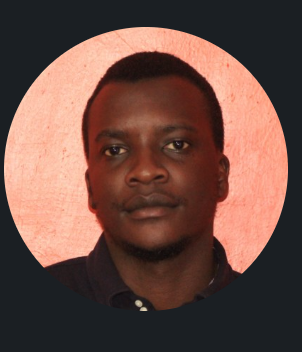

Full Stack Software Engineer with 5+ years architecting GDPR-compliant, multilingual platforms for international development and conservation organizations — designed to perform reliably in low-bandwidth, remote environments across Africa and Europe.
Backend-leaning full stack, with specific depth in offline-sync and ICT4D systems.
PHP (Laravel), Python (Django, Flask), Java, Kotlin
React, HTML5, CSS3, Responsive Design
MySQL, MongoDB, Data Synchronization
AWS, Azure, GCP, Git, Linux, CI/CD
WordPress, Drupal 10, ODK, dSPACE, Microsoft Dynamics
ICT4D, GDPR Compliance, M&E Systems, API Design, Agile
Five roles, four organizations, one thread — systems that hold up in the field.
Live demos, repos, and case studies — all linked.
Multilingual digital M&E system supporting international agricultural conservation, with ODK-integrated field data collection tools used across West Africa. Interactive dashboards enabled real-time impact evaluation.
End-to-end enterprise software for international conservation organizations, including multilingual RESTful APIs (Django/Flask) built on scalable architecture for global, high-load environments.
Offline-capable Android app enabling field agents in rural Africa to collect conservation data, with a Laravel-powered backend sync and multilingual interfaces built for intermittent connectivity.
Automated biodiversity mapping platform improving research standardization, with multilingual SOP interfaces enhancing conservation data workflows and GDPR compliance.
Mobile advisory app delivering site-specific fertilizer and crop management recommendations to smallholder farmers, supporting agronomic decision-making in low-connectivity rural environments.
B2B SaaS platform for Kenyan real estate agencies, including a Laravel + Blade analytics dashboard with Chart.js covering rent collection, M-Pesa transactions, and KRA/WHT compliance reporting.
Point-of-sale system built for retail businesses, covering transaction processing, inventory tracking, and sales reporting workflows.
Technical writing on ICT4D, offline-first, and sustainable software.
Lessons from 5 years of field work in low-connectivity environments.
Practical approaches for development organizations working in remote areas.
How data synchronization enables field research in Africa's most remote regions.
From people who've worked alongside me.
"Zedekiah delivered a complex M&E system that works flawlessly in low-bandwidth rural areas. His attention to GDPR and multilingual needs was exceptional — the system is still running across 8 countries."
— Program Director International Institute of Tropical Agriculture (IITA)
"One of the few engineers who truly understands offline-first design. He built our conservation app from scratch and it's still running in 12 countries across Africa. His Laravel sync architecture is rock solid."
— CTO Kobby Technologies Ltd